import numpy as np
from matplotlib import pyplot as plt
import pandas as pdCS 1010
Week 4 - Plotting Deep Dive using Matplotlib
Instructor:
Prof. Kartik Bulusu [CS & MAE]
GTA:
Oscar Southwell
UTA:
Sameen Ahmad, Talia Novack
LA:
Manue Alaimo, Selman Eris, Saif Alzaabi, Gustavo Londono, Amy Longua, Pravin Khanal
Grader:
Rutvik Solanki
If you have any questions regarding Python, please feel free to send a slack message or email to a member of the teaching team or come to office hours! We are happy to help!!
Let’s start by importing our favorite friends as always going forward in this class: numpy, matplotlib, and pandas
Getting Started with matplotlib!
We can use csv files and pandas to pull in data (see demo 3), but let’s create our own numpy array for plotting this time
Numpy Linspace Function
np.linspace() is a great tool to use during plotting! Provide the start, stop and number of points in the range and it will give you an evenly distributed number of elements in a numpy array
Example:
x = np.linspace(10, 20, 1001) will give an array containing 1001 elements evenly spaced from 10 to 20
x = np.linspace(0, 10, 101)
print(x)[ 0. 0.1 0.2 0.3 0.4 0.5 0.6 0.7 0.8 0.9 1. 1.1 1.2 1.3
1.4 1.5 1.6 1.7 1.8 1.9 2. 2.1 2.2 2.3 2.4 2.5 2.6 2.7
2.8 2.9 3. 3.1 3.2 3.3 3.4 3.5 3.6 3.7 3.8 3.9 4. 4.1
4.2 4.3 4.4 4.5 4.6 4.7 4.8 4.9 5. 5.1 5.2 5.3 5.4 5.5
5.6 5.7 5.8 5.9 6. 6.1 6.2 6.3 6.4 6.5 6.6 6.7 6.8 6.9
7. 7.1 7.2 7.3 7.4 7.5 7.6 7.7 7.8 7.9 8. 8.1 8.2 8.3
8.4 8.5 8.6 8.7 8.8 8.9 9. 9.1 9.2 9.3 9.4 9.5 9.6 9.7
9.8 9.9 10. ]#Using array math from Demo 2, we can create some arrays named y1, y2, and y3 as a function of x
y1 = 2*x
y2 = x**2
y3 = 3*x**3Matplotlib Pyplot Figures and Subplots
A figure is just a place for our plots to exist. A figure can have multiple subplots which are arranged like a matrix in rows and columns. Each subplot is called an axis. Let’s play around with the subplots feature a little bit
To create a set of axes, use the function:
fig, axs = plt.subplots(num_of_rows, number_of_columns, figsize=(width, height))
Let’s break this down a little at a time.
fig, axs = plt.subplots(1, 2, figsize=(6,4))
#this figure has 1 row of 2 plots, and the overall size of the figure is 6 units wide, 4 units tall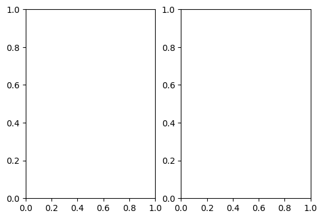
fig, axs = plt.subplots(2,3, figsize=(12,4))
#this workspace has 2 rows of 3 plots each, the overall size of the figure is 12 units wide, 4 units tall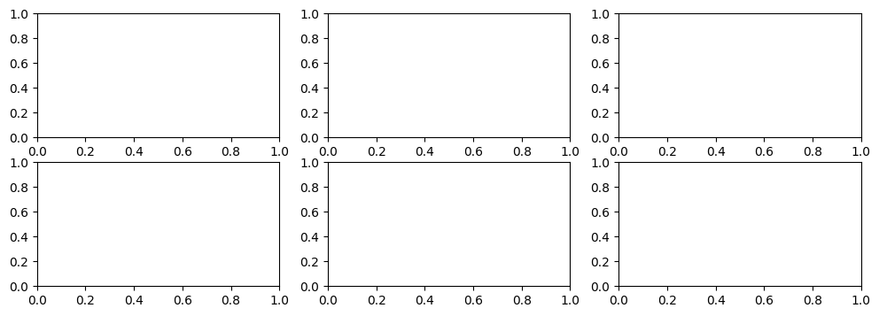
What if we only want one plot?
We can use the exact same thing!! The only thing that is typical to change (but not necessary) is from axs to ax to show it is singular
fig, ax = plt.subplots(1, 1, figsize=(width, height))
If we really want to short-hand it, plt.subplots(figsize=(width, height)) works just the same. It assumes a 1x1 by default!
fig, ax = plt.subplots(figsize=(4,6))
#shows a figure with only one subplot and the overall size is 4 units wide by 6 units tall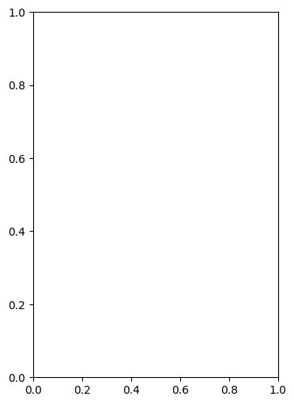
Plotting on Subplots
3 cases for plotting!
- Case 1. 1x1 subplot
- Case 2. 1xn subplots or mx1 subplots (where m and n are not equal to 1)
- Case 3. mxn subplots (where m and n are not equal to 1)
Case 1.
When we have a 1x1 Subplot, we just use ax.plot(x,y) similar to plt.plot(x,y) from demo 2.
Case 2.
When we have only one row or only one column of plots, we use axs[ax_num].plot(x,y) where ax_num goes from 0 to the number specified -1
For example, to plot on the third plot in a single row use axs[2].plot(x,y)
Another example, to plot on the first element in a single column uses axs[0].plot(x,y)
Case 3.
In order to plot when we have a bunch of different places to do so, we need to tell the computer which spot to plot.
To access an axis (subplot), use its location. This is very similar to pandas when we used df.loc['row', 'column']
For example, to plot on the top left axis, we use axs[0,0].plot(x,y)
#Example of case 1. for a 1x1 subplot
fig, ax = plt.subplots(figsize=(4,6))
ax.plot(x,y1)
ax.plot(x,y2)
ax.plot(x,y3);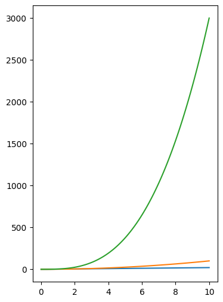
#Example of case 2. for a 1xn subplot
fig, axs = plt.subplots(1, 2, figsize=(8,4))
#plot on the left plot
axs[0].plot(x,y1)
#plot again on the left
axs[0].plot(x,y2)
#plot on the right plot
axs[1].plot(x,y3);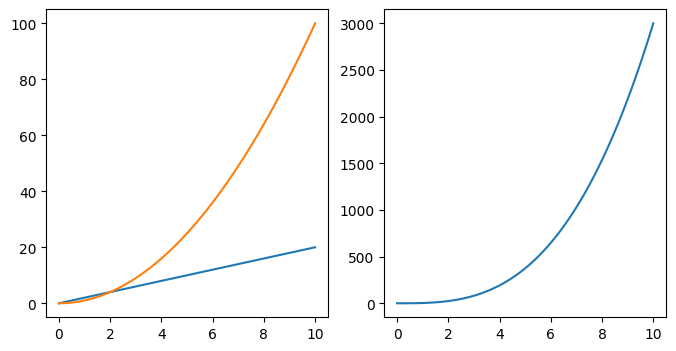
#Example of case 2. for a mx1 subplot
fig, axs = plt.subplots(2, 1, figsize=(4,8))
#plot on the top plot
axs[0].plot(x,y1)
#plot again on the top
axs[0].plot(x,y2)
#plot on the bottom plot
axs[1].plot(x,y3);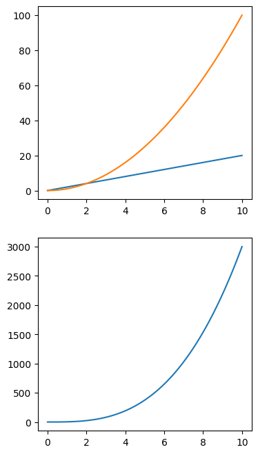
#Example of case 3. We will have a 2x2 plotting setup
fig, axs = plt.subplots(2, 2, figsize=(8,8))
#plot on the top left, row=0, column=0
axs[0,0].plot(x,y1)
#plot on the top right, row=0, column=1
axs[0,1].plot(x,y2)
#plot on the top left, row=1, column=0
axs[1,0].plot(x,y3);
#putting a ; at the end of our matplotlib figures gets rid of the sentence that is printed by default during plotting
#we'll leave the bottom right blank, but it would have axs[1,1]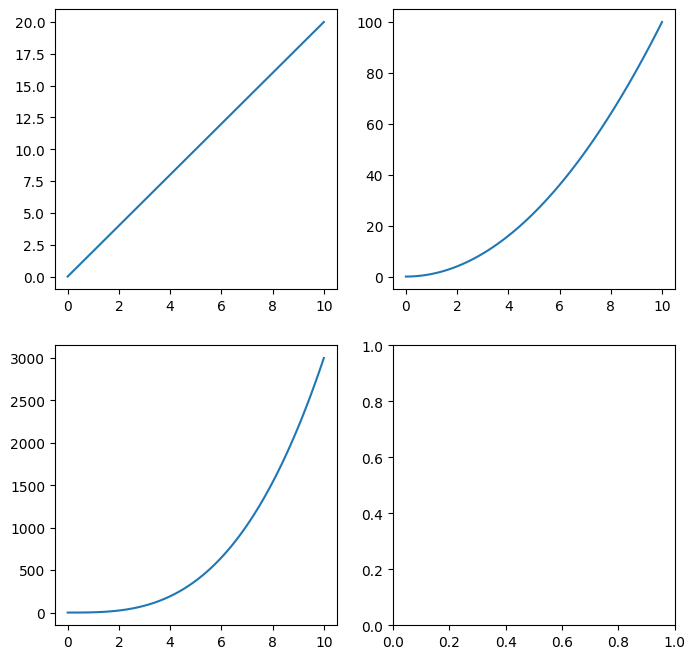
#For your reference, the default pandas column and index names happen to correspond with the axis plotting
x = np.array([[1, 2], [3, 4]])
display(pd.DataFrame(x))
#in this example, the number 4 is in the location 1,1, and also in the lower right| 0 | 1 | |
|---|---|---|
| 0 | 1 | 2 |
| 1 | 3 | 4 |
Getting Fancy with Plotting!
To really get our creative energy flowing, we can make our plots look very nice!
We will cover all of the key information in one plot. Below is the plot we work with in class and then beyond that, in section v. is all of the in-depth descriptions of how each of these things work, if you’d like to know. To jump to section v. Use the built in Table of contents feature
All of the features shown in this example are for a 1x1 subplot using ax.FUNCTION, so similar to plotting above use axs[INDEX].FUNCTION to apply to a subplot specifically
Example: to put a unique title on every suplot of a 2x2 figure
axs[0,0].set_title('Title1')
axs[0,1].set_title('Title2')
axs[1,0].set_title('Title3')
axs[1,1].set_title('Title4')#set up our single subplot!
fig, ax = plt.subplots(figsize=(8,8))
#let's establish t for 5 seconds, with 11 datapoints
t = np.linspace(0, 5, 11)
#now lets establish our y-axis values
u1 = t
u2 = t**2
u3 = t**2 + 12
# red dashes, blue dots and green triangles
ax.plot(t, u1, color='r', linestyle='--', label='u1')
ax.plot(t, u2, color='b', marker='s', label='Function u2')
ax.plot(t, u3, 'g^')
#and lets get a little fancy an add some labeling
ax.set_xlabel('time (s)', fontsize=12)
ax.set_ylabel('Values as a function of time', fontsize=12)
#and maybe a title for our plot
ax.set_title('A very fancy plot', fontsize=14)
#ax.text(x, y) just puts a textbox at this coordinate
ax.text(1, 45, 'Look I can type in here too!!')
#ax.axis([x1, x2, y1, y2]) limits the view we want to see
ax.axis([0, 5, 0, 60])
#ax.grid() adds a grid to the plot
ax.grid()
#ax.lengend() adds a legend (and finally a semi-colon to eliminate the default printing)
ax.legend();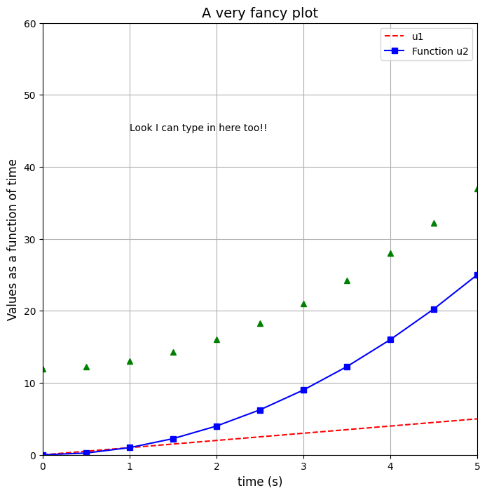
Alternatives to Matplotlib!
There’s lots of matplotlib alternatives in python for plotting. Each has their pros and cons. You can read about some of them if you are interested: - Plotly (Plotly Express) - Seaborn - Altair - ggplot - geoplotlib - Gleam
Challenge Question!
As a group tackle the following question together!
You have two time-dependent signals that are measured in millivolts (mV):
\(u(t) = 1 + \sin(2\pi t)\)
\(v(t) = 1 + \cos(2\pi t)\)
- Set up an array for t from 0 to 5 seconds with 1001 datapoints
- Setup a 1x2 subplot space for plotting (two side by side axes). Pick a width and height that looks nice to you
- Plot signal u vs t on a subplot on the left, and v vs t on a subplot on the right
- Give each subplot axis labels (x and y axis)
- Give each subplot a title
- Change the color of u(t) to green and v(t) to red
Hints
#step 1.
t = np.linspace(YOUR_CONTENT)
u = ARRAY_MATH_USING_t
v = ARRAY_MATH_USING_t
#step 2.
fig, axs = plt.subplots(ROW, COLUMN, figsize=(WIDTH, HEIGHT))
#step 3.
axs[LEFT].plot(t,u)
axs[RIGHT].plot(t,v)
#step 4.
axs[LEFT].set_xlabel(XLABEL)
axs[LEFT].set_ylabel(YLABEL)
axs[RIGHT].set_xlabel(XLABEL)
axs[RIGHT].set_ylabel(YLABEL)
#step 5.
axs[LEFT].set_title(TITLE)
axs[RIGHT].set_title(TITLE)
#step 6.
#revisit step 3 and make modifcations for color#Your code here!In-Depth Matplotlib Resources (Bonus - Not Required!)
Here is a huge bank of information regarding matplotlib we will not cover in class, but available for you to play around with!
The best way to work with matplotlib is to try it out!
It should contain most things you would need. If it doesn’t, the answers are a Google away. We have also attached the documentation for matplotlib for you here
Useful 2D Non-line Plots
This section covers: - Scatter plots - Bar plots - Heatmaps
Scatter Plots
fig, ax = plt.subplots();
x = [0, 1, 2, 3, 4]
y = [9, 4, 7, -5, 8]
#Default ax.plot shown in blue
ax.plot(x,y)
#Scatter version shown in red
ax.scatter(x,y, color='red')
ax.grid();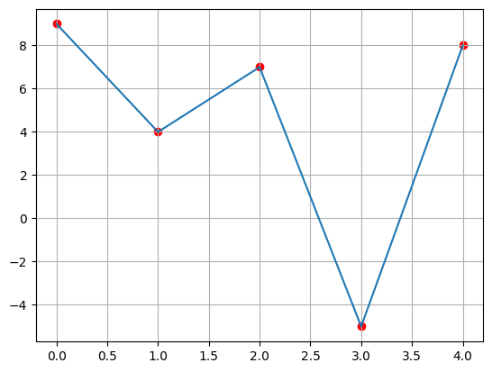
Bar Plots
fig, ax = plt.subplots();
x = [0, 1, 2, 3, 4]
y = [9, 4, 7, -5, 8]
ax.bar(x, y);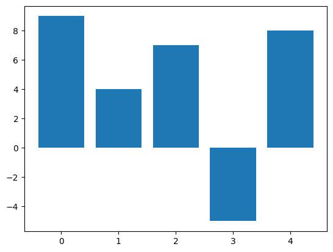
#horizontal bar chart
fig, ax = plt.subplots();
x = [0, 1, 2, 3, 4]
y = [9, 4, 7, -5, 8]
ax.barh(x, y);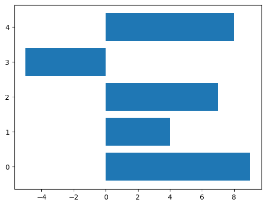
Heatmaps and Images
matrix = np.array([[0.8, 2.4, 2.5, 3.9, 0.0, 4.0, 0.0],
[2.4, 0.0, 4.0, 1.0, 2.7, 0.0, 0.0],
[1.1, 2.4, 0.8, 4.3, 1.9, 4.4, 0.0],
[0.6, 0.0, 0.3, 0.0, 3.1, 0.0, 0.0],
[0.7, 1.7, 0.6, 2.6, 2.2, 6.2, 0.0],
[1.3, 1.2, 0.0, 0.0, 0.0, 3.2, 5.1],
[0.1, 2.0, 0.0, 1.4, 0.0, 1.9, 6.3]])
#converts matrix to a heat map with each position being colored according to number
fig, ax = plt.subplots()
im = ax.imshow(matrix)
#adds a colorbar to the plot to represent what each color means
from mpl_toolkits.axes_grid1 import make_axes_locatable
divider = make_axes_locatable(ax)
cax = divider.append_axes("right", size="5%", pad=0.05)
fig.colorbar(im, cax=cax);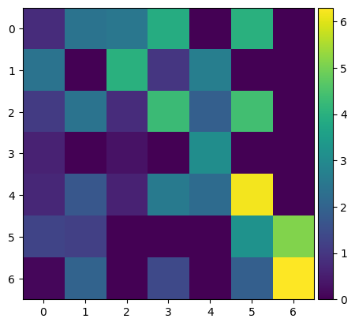
Plotting Effects
This section covers a lot of different plotting effects in matplotlib - Title - Suptitle - Axis Labels - Fontsizes - Axis Ticksize - Legend - Grid - Line Thickness - Line Color - Line Style - Transparency - “alpha”
Title, Axis Labels, Suptitle
#showcasing "set" features - title, xlabel, ylabel
fig, axs = plt.subplots(2,2,figsize=(8,8), constrained_layout=True)
# constrained_layout = True spaces the plots accordingly to fit the words
#one option in one line
axs[0,0].set(xlabel='Top Left X-axis', ylabel='Top Left Y-axis', title='Top Left')
axs[0,1].set(xlabel='Top Right X-axis', ylabel='Top Right Y-axis', title='Top Right')
axs[1,0].set(xlabel='Lower Left X-axis', ylabel='Lower Left Y-axis', title='Lower Left')
axs[1,1].set(xlabel='Lower Right X-axis', ylabel='Lower Right Y-axis', title='Lower Right')
#suptitle of a plot
fig.suptitle('This is the Suptitle of the Plot');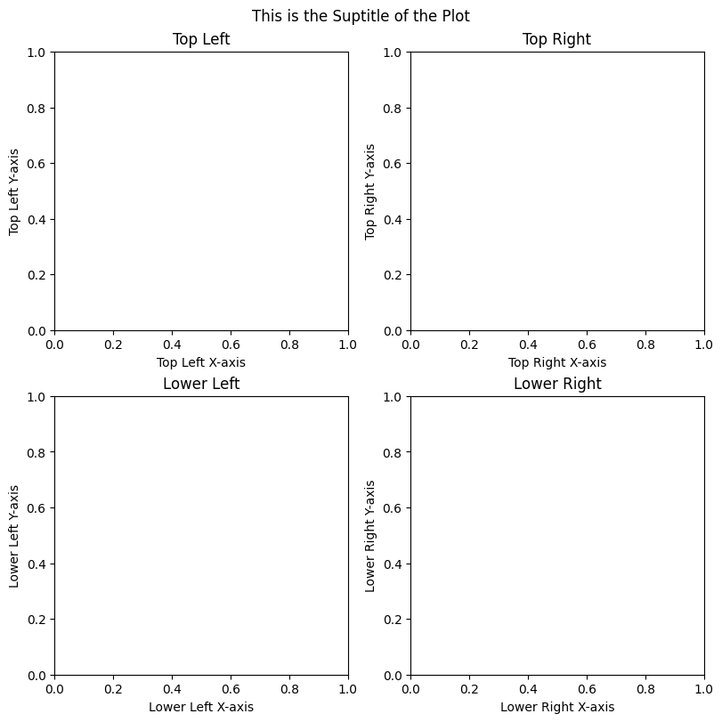
#showcasing individual set features - set_title, set_xlabel, set_ylabel
fig, axs = plt.subplots(2,2,figsize=(8,8), constrained_layout=True)
# constrained_layout = True spaces the plots accordingly to fit the words
#bulkier but allows for fontsize manipulation
#axs[0,0].set_xlabel('Top Left X-axis', fontsize=20)
#axs[0,0].set_ylabel('Top Left Y-axis', fontsize=20)
#axs[0,0].set_title('Top Left', fontsize=25)
#repeat for all axs[x,y] slices or use axs.flat to loop through
naming_list = ['Top Left', 'Top Right', 'Lower Left', 'Lower Right']
for num, ax in enumerate(axs.flat):
ax.set_xlabel(naming_list[num]+' x-label', fontsize=18)
ax.set_ylabel(naming_list[num]+' y-label', fontsize=18)
ax.set_title(naming_list[num]+' Title', fontsize=20)
fig.suptitle('This is the Suptitle of the Plot', fontsize=30);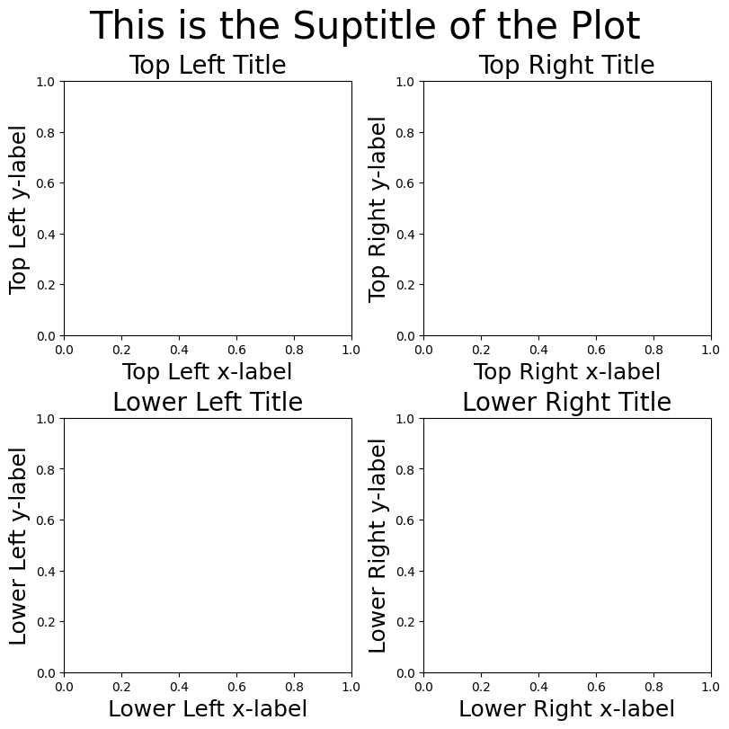
#sharing axis labels
naming_list = ['Top Left', 'Top Right', 'Lower Left', 'Lower Right']
#notice x-labels for the top two plots are missing
fig, axs = plt.subplots(2, 2, figsize=(8,8), constrained_layout=True)
for num, ax in enumerate(axs.flat):
ax.set_xlabel(naming_list[num]+' x-label', fontsize=18)
ax.set_ylabel(naming_list[num]+' y-label', fontsize=18)
ax.set_title(naming_list[num]+' Title', fontsize=20)
ax.label_outer()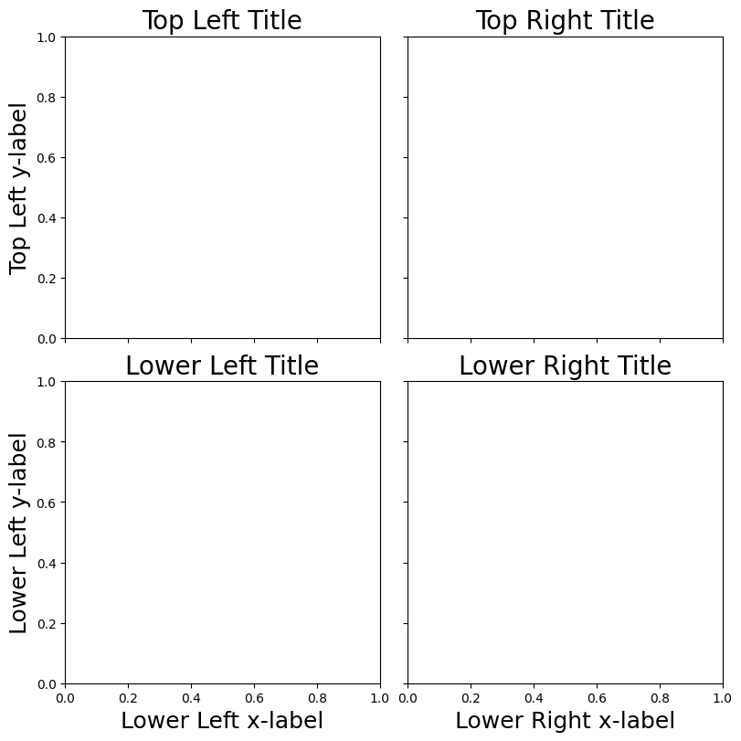
Axis Ticksize
#axis ticks - changed globally
import matplotlib as mpl
#15 is huge, but it will nicely demonstrate what is happening
mpl.rc('xtick', labelsize=15)
mpl.rc('ytick', labelsize=15)fig, axs = plt.subplots(2,2,figsize=(8,8), constrained_layout=True)
#one option in one line
axs[0,0].set(xlabel='Top Left X-axis', ylabel='Top Left Y-axis', title='Top Left')
axs[0,1].set(xlabel='Top Right X-axis', ylabel='Top Right Y-axis', title='Top Right')
axs[1,0].set(xlabel='Lower Left X-axis', ylabel='Lower Left Y-axis', title='Lower Left')
axs[1,1].set(xlabel='Lower Right X-axis', ylabel='Lower Right Y-axis', title='Lower Right')
#suptitle of a plot
fig.suptitle('This is the Suptitle of the Plot');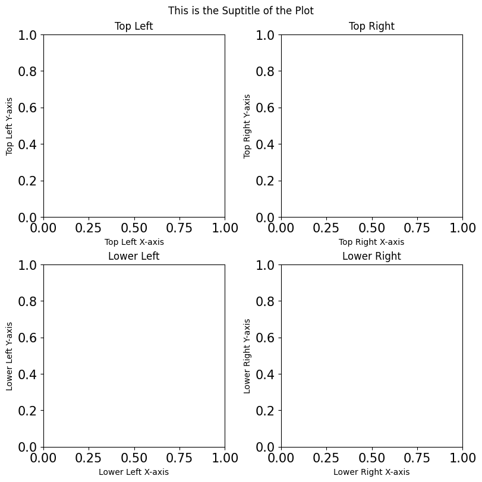
#reset it to something more reasonable
mpl.rc('xtick', labelsize=10)
mpl.rc('ytick', labelsize=10)Legend and Grid
The legend of the plot is also sometimes referred to as the key of the plot. It is where lines are labeled
The grid just shows us the x-y points every so often as faint lines in the background
fig, ax = plt.subplots(1,1, figsize=(6,4))
#powers of x
x = np.linspace(0, 5, 100)
y1 = x
y2 = x**2
y3 = x**3
y4 = x**4
y_list = [y1, y2, y3, y4]
name_list = ['1st Degree', '2nd Degree', '3rd Degree', '4th Degree']
for num, y in enumerate(y_list):
ax.plot(x,y, label=name_list[num])
#in general: ax.plot(x,y, label='Label')
#make the legend of the plot (also sometimes called the key)
ax.legend()
#legend has fontsize, location, and even title features (shown in next plot)
#add gridlines to the plot
ax.grid()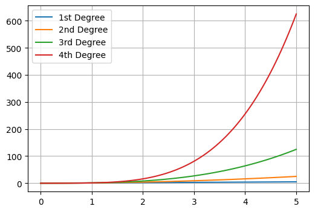
fig, ax = plt.subplots(1,1, figsize=(6,4))
#powers of x
x = np.linspace(0, 5, 100)
y1 = x
y2 = x**2
y3 = x**3
y4 = x**4
ylist = [y1, y2, y3, y4]
name_list = ['1st', '2nd', '3rd', '4th']
for num, y in enumerate(y_list):
ax.plot(x,y, label=name_list[num])
#in general: ax.plot(x,y, label='Label')
#this combination will not look good, but its about showcasing the features
ax.legend(title = 'Polynomial Degree', title_fontsize=15, fontsize=10, loc='lower left')
#add gridlines to the plot
ax.grid()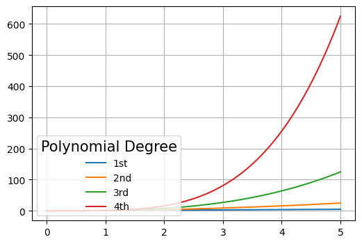
Line thickness, Line Color, Line Style and Transparency
fig, ax = plt.subplots(1,1, figsize=(6,4))
#powers of x
x = np.linspace(0, 5, 100)
y1 = x
y2 = x**2
y3 = x**3
y4 = x**4
ax.plot(x,y1, color='r') #red color (short-hand)
ax.plot(x,y2, color='#033C5A') #color is GW Blue (in hex code)
ax.plot(x,y3, color='darksalmon',linestyle='dashed')
#darksalmon is a default named color from matplotlib
ax.plot(x,y4, linewidth=8, alpha=0.3);
#alpha varies from 0.0 to 1.0 and determines transparency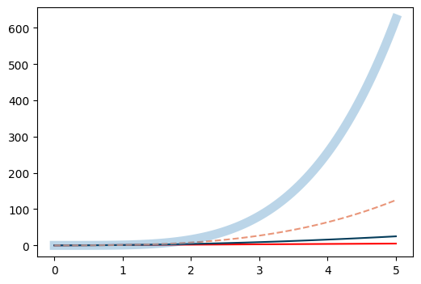
Additional Plotting Effects and Techniques
This section covers: - Log scale plots - Axis Limits - Annotation - Arrows - Thicker gridlines - Shading of shapes - In-line labels - Category labels (such as all dashed lines mean something)
Log Scaling
Sometimes plots are best represented with a Logarithmically-Scaled y-axis or logarithmically scaled x and y axes
fig, axs = plt.subplots(1, 2)
x = np.array([1, 2, 3, 4, 5])
y = 10**x
axs[0].plot(x,y)
axs[0].set_title('Normal Scaling')
axs[1].set_yscale('log')
axs[1].plot(x,y)
axs[1].set_title('Logarithmic Scaling');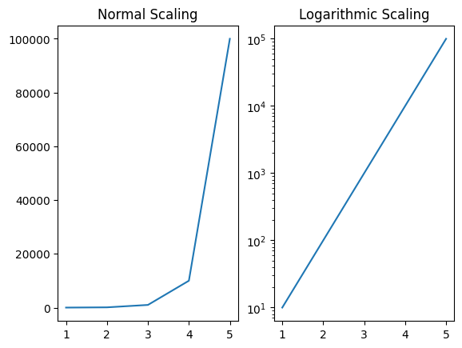
Axis Limiting
You can limit the view of the window by adjusting the axes
fig, ax = plt.subplots()
x = [0, 1, 2, 3, 4]
y = [9, 4, 7, -5, 8]
ax.plot(x,y)
ax.set_xlim(left=1, right=5)
ax.set_ylim(top=6, bottom=0);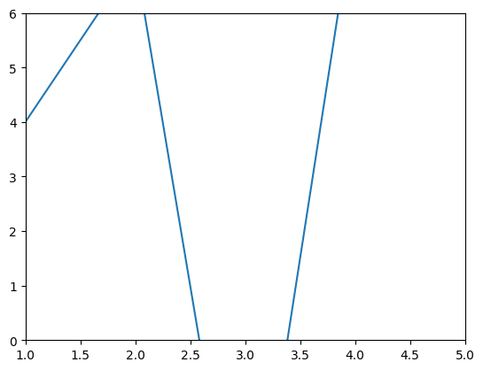
Annotation of points
Labeling points is super useful for some plots
fig, ax = plt.subplots();
x = [0, 1, 2, 3, 4]
y = [9, 4, 7, -5, 8]
#Default plt.plot shown in blue
ax.plot(x,y)
#Scatter version shown in red
ax.scatter(x,y, color='red')
pointName = ['Name1', 'Name2', 'Name3', 'Name4', 'Name5']
for num in range(len(x)):
ax.annotate(text=pointName[num], xy=(x[num],y[num]));
#xy could be adjusted per point to move the values to better locations
Arrows
Plotting arrows can show cycles more easily or all sorts of other fun applications
Draw an arrow from (x, y) to (x+dx, y+dy).
fig, ax = plt.subplots()
x = 5
y = 0
dx = 2
dy = 4
ax.arrow(x,y,dx,dy, head_width=0.2, head_length=0.5, length_includes_head=True);
#if given (x1, y1) and (x2, y2):
x1 = 5
x2 = 7
y1 = 0
y2 = 4
dx = x2-x1
dy = y2-y1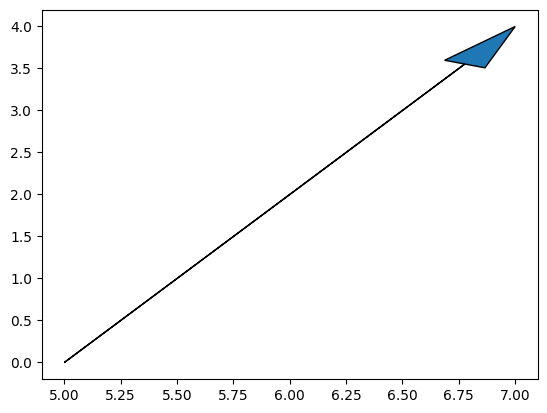
Thicker Gridlines (horizontal and vertical lines)
You can adjust all gridlines with this feature:
ax.xaxis.get_gridlines() & ax.yaxis.get_gridlines()
Or
This you want to bold the singlular lines through 0 for example, or draw a horizontal line at a y value (or vertical line at an x value), this is what you would use:
Documentation:
fig, ax = plt.subplots()
ax.grid()
#color all x-grids red
xgrids = ax.xaxis.get_gridlines()
for num in range(len(xgrids)):
xgrids[num].set_color('r')
xgrids[num].set_linewidth(2.5)
#change one x-grid to green to show off indexing
#index from 0 (starting on the left of the plot)
xgrids[3].set_color('g')
xgrids[3].set_linewidth(5)
#color all y-grids blue
ygrids = ax.yaxis.get_gridlines()
for num in range(len(ygrids)):
ygrids[num].set_color('b')
ygrids[num].set_linewidth(3)
#change one y-grid to yellow to show off indexing
#index from 0 (starting on the bottom on the plot)
ygrids[3].set_color('y')
ygrids[3].set_linewidth(5)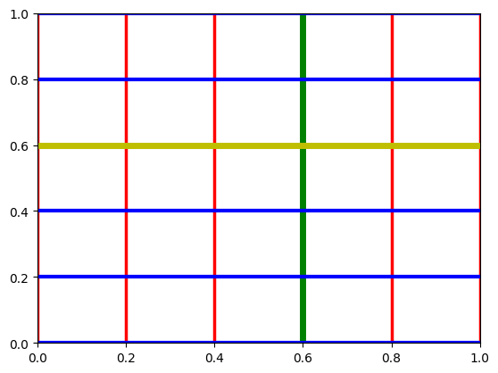
fig, ax = plt.subplots()
ax.grid()
ax.axhline(y=0, color='k', linewidth=2)
ax.axvline(x=0, color='k', linewidth=4)
ax.axhline(y=2.15, color='b', linewidth=3);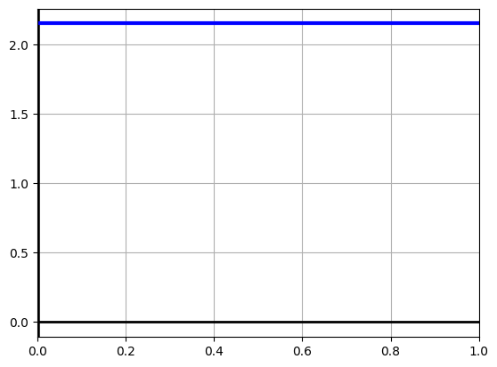
Shading of Shapes
fig, ax = plt.subplots();
#has 4 items since its a square
x_square = [0, 1, 1, 0]
y_square = [0, 0, 1, 1]
#has 3 items since its a triangle
x_triangle = [2, 3, 4]
y_triangle = [2, 6, 4]
ax.fill(x_square, y_square)
ax.fill(x_triangle, y_triangle, color='r', alpha=0.4);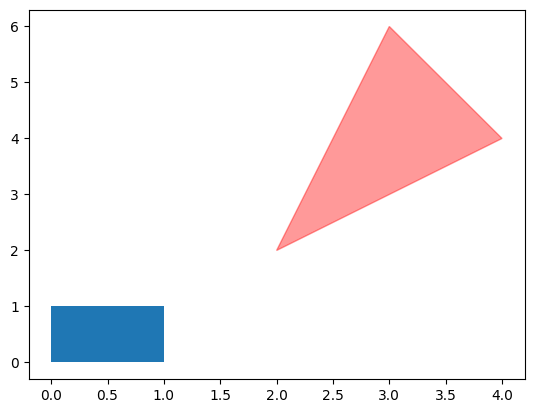
In-line labels
Someone came up with this awesome system for in-line labeling that I use frequently. The link to the original is provided here if you want to read about it from the source
def label_line(line,x,label=None,align=True,**kwargs):
ax = line.axes
xdata = line.get_xdata()
ydata = line.get_ydata()
if (x < xdata[0]) or (x > xdata[-1]):
print('x label location is outside data range!')
return
#Find corresponding y co-ordinate and angle of the line
ip = 1
for i in range(len(xdata)):
if x < xdata[i]:
ip = i
break
y = ydata[ip-1] + (ydata[ip]-ydata[ip-1])*(x-xdata[ip-1])/(xdata[ip]-xdata[ip-1])
if not label:
label = line.get_label()
if align:
#Compute the slope
dx = xdata[ip] - xdata[ip-1]
dy = ydata[ip] - ydata[ip-1]
ang = np.degrees(np.arctan2(dy,dx))
#Transform to screen co-ordinates
pt = np.array([x,y]).reshape((1,2))
trans_angle = ax.transData.transform_angles(np.array((ang,)),pt)[0]
else:
trans_angle = 0
#Set a bunch of keyword arguments
if 'color' not in kwargs:
kwargs['color'] = line.get_color()
if ('horizontalalignment' not in kwargs) and ('ha' not in kwargs):
kwargs['ha'] = 'center'
if ('verticalalignment' not in kwargs) and ('va' not in kwargs):
kwargs['va'] = 'center'
if 'backgroundcolor' not in kwargs:
kwargs['backgroundcolor'] = ax.get_facecolor()
if 'clip_on' not in kwargs:
kwargs['clip_on'] = True
if 'zorder' not in kwargs:
kwargs['zorder'] = 2.5
ax.text(x,y,label,rotation=trans_angle,**kwargs)
def label_lines(lines,align=True,xvals=None,**kwargs):
ax = lines[0].axes
labLines = []
labels = []
#Take only the lines which have labels other than the default ones
for line in lines:
label = line.get_label()
if "_line" not in label:
labLines.append(line)
labels.append(label)
if xvals is None:
xmin,xmax = ax.get_xlim()
xvals = np.linspace(xmin,xmax,len(labLines)+2)[1:-1]
for line,x,label in zip(labLines,xvals,labels):
label_line(line,x,label,align,**kwargs)fig, ax = plt.subplots(1,1, figsize=(6,4))
#powers of x
x = np.linspace(0, 5, 100)
y1 = x
y2 = x**2
y3 = x**3
y4 = x**4
y_list = [y1, y2, y3, y4]
name_list = ['1st Degree', '2nd Degree', '3rd Degree', '4th Degree']
for num, y in enumerate(y_list):
ax.plot(x,y, label=name_list[num])
ax.grid()
#maybe not the best showcase of the possibilities, but a good tool nonetheless
label_lines(plt.gca().get_lines(),align=False,fontsize=10)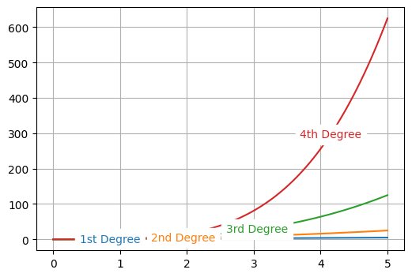
fig, ax = plt.subplots(1,1, figsize=(6,4))
#powers of x
x = np.linspace(0, 5, 100)
y1 = x
y2 = x**2
y3 = x**3
y4 = x**4
y_list = [y1, y2, y3, y4]
name_list = ['1st Degree', '2nd Degree', '3rd Degree', '4th Degree']
for num, y in enumerate(y_list):
ax.plot(x,y, label=name_list[num])
ax.grid()
#maybe not the best showcase of the possibilities, but a good tool nonetheless
label_lines(plt.gca().get_lines(),zorder=2.5, color='grey')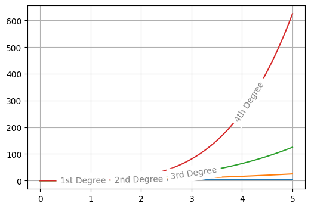
Category Labeling
What if we want to say all dashed lines mean something? What if we want to put something in the legend we don’t want to see?
We can do that with “Category Labeling”
fig, ax = plt.subplots(figsize=(10,8))
x = np.linspace(0, 5, 50)
y1 = np.sqrt(x)
y1b = np.sqrt(x)+ 30
y2 = x**2
y3 = x**(1/3)
y4 = x**3
y4b = x**3 + 20
ax.plot(x, y1, linestyle='--', color='r')
ax.plot(x, y1b, linestyle='--', color='r')
ax.plot(x,y2, color='g')
ax.plot(x, y3, linestyle='--', color='b')
ax.plot(x,y4, color = 'y')
ax.plot(x,y4b, color='y')
#we can use a fancy trick to plot a single point (which won't show up on the plot)
ax.plot([0],[0], color = 'r', label='Square root function')
ax.plot([0],[0], color = 'g', label='Square function')
ax.plot([0],[0], color = 'b', label='Cube root function')
ax.plot([0],[0], color = 'y', label='Cubic function')
ax.plot([0],[0], color = 'grey', linestyle = '--', label='Root function')
ax.plot([0],[0], color = 'grey', label='Power function')
plt.legend(title='Showcase Category Labels:', title_fontsize=16, fontsize=12);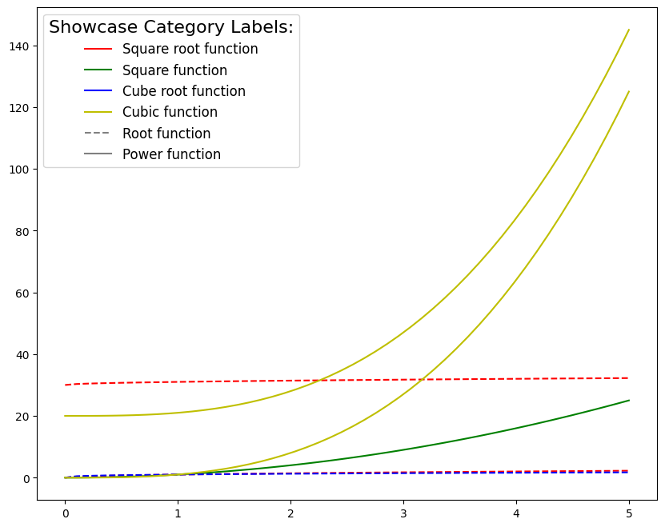
Auto-coloring with the Cycler Library
Tired of always looking up the GW colors for figures, I sure am. Here’s a faster way!
Order matters, will always plot the first line without a color label as the first color in the given list, then the 2nd as the 2nd color, etc
If it gets to the end of the list, it will begin from the beginning with the 1st color hence “Cycler”
from cycler import cycler
import matplotlib as mpl
#save this default for later when we need it
prop_cycle = mpl.rcParams['axes.prop_cycle']#Cycle 1:
#in order: GW red, GW green, GW Yellow, GW Blue
colorlist1 = ['#C9102F', '#008364', '#FFC72C', '#033C5A']
mpl.rcParams['axes.prop_cycle'] = cycler(color=colorlist1)
fig, ax = plt.subplots(1,1, figsize=(6,4))
#powers of x
x = np.linspace(0, 5, 100)
y1 = x
y2 = x**2
y3 = x**3
y4 = x**4
ylist = [y1, y2, y3, y4]
namelist = ['1st Degree', '2nd Degree', '3rd Degree', '4th Degree']
#no color parameter specified, but matplotlib defaults to the sequence we told it to
for num, y in enumerate(ylist):
ax.plot(x,y, label=namelist[num])
ax.legend();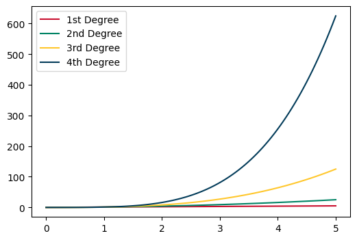
#Cycle 2:
#in order: GW blue, GW light blue, GW buff, GW dark green, GW Brown
colorlist2 = ['#033C5A', '#0073AA', '#AA9868', '#008364', '#A75523']
mpl.rcParams['axes.prop_cycle'] = cycler(color=colorlist2)
fig, ax = plt.subplots(1,1, figsize=(6,4))
#powers of x
x = np.linspace(0, 5, 100)
y1 = x
y2 = x**2
y3 = x**3
y4 = x**4
y5 = x**5
ylist = [y1, y2, y3, y4, y5]
namelist = ['1st Degree', '2nd Degree', '3rd Degree', '4th Degree', '5th Degree']
#no color parameter specified, but matplotlib defaults to the sequence we told it to
for num, y in enumerate(ylist):
ax.plot(x,y, label=namelist[num])
ax.legend();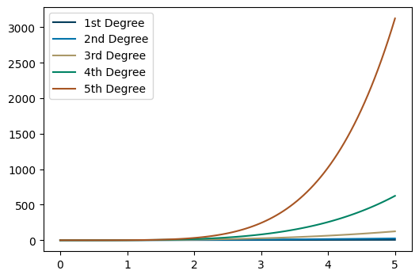
#here's the full GW color system (excluding black and white) in one list if you have a lot of lines to plot
GW_COLOR_LIST = ['#C9102F', '#008364', '#FFC72C', '#033C5A', '#0073AA', '#AA9868', '#008364', '#A75523']
mpl.rcParams['axes.prop_cycle'] = cycler(color=GW_COLOR_LIST)
#but we will go back to defaults
mpl.rcParams['axes.prop_cycle'] = prop_cycle3D plotting with Matplotlib
from mpl_toolkits import mplot3d#basic 3D plot initialization
fig = plt.figure(figsize=(6,5))
ax = plt.axes(projection='3d')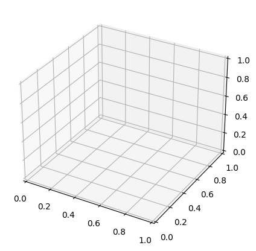
3D line and scatter plots
#line plots
fig = plt.figure(figsize=(6,5))
ax = plt.axes(projection='3d')
x = np.linspace(0, 5, 50)
y = np.sin(np.linspace(0, 10, 50))
z = np.cos(x) * y
ax.plot3D(x, y, z);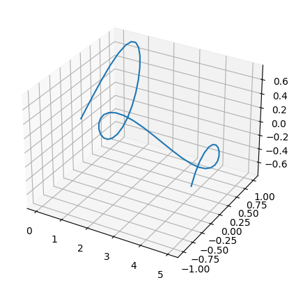
#scatter plot
fig = plt.figure(figsize=(6,5))
ax = plt.axes(projection='3d')
x = np.linspace(0, 10, 10)
y = (x+67)**2
z = np.cos(x)
ax.scatter3D(x,y,z);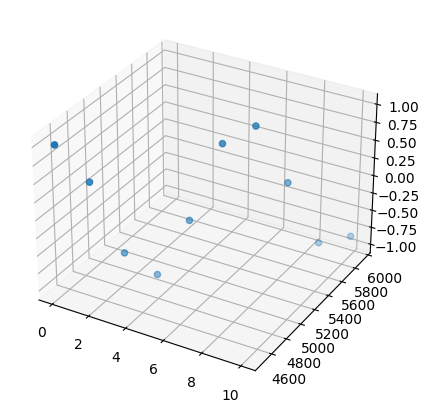
Contour, Wireframe, and Surface Plots
Contour - Imagine making rings at differing elevations of a surface, then plot the rings
Wireframe - Gridded mesh of surface structures
Surface - Solid surface plot
Each style has benefits and downsides for representation of data, so I’ve included them all to make it easy to know the options
Extra Notes:
np.meshgrid is commonly used in 3d plots. Meshgrid documentation
#this function is commonly used in math classes because it looks fun
def f(x, y):
return (np.sin(np.sqrt(x**2 + y**2)))
#contour plot example
x = np.linspace(-8, 8, 50)
y = np.linspace(-8, 8, 50)
X, Y = np.meshgrid(x, y)
Z = f(X, Y)
fig = plt.figure(figsize=(8,6))
ax = plt.axes(projection='3d')
#4th parameter here indicates the number of elevation rings used
ax.contour3D(X, Y, Z, 30);
#wireframe example
x = np.linspace(-8, 8, 50)
y = np.linspace(-8, 8, 50)
X, Y = np.meshgrid(x, y)
Z = f(X, Y)
fig = plt.figure(figsize=(8,6))
ax = plt.axes(projection='3d')
ax.plot_wireframe(X, Y, Z);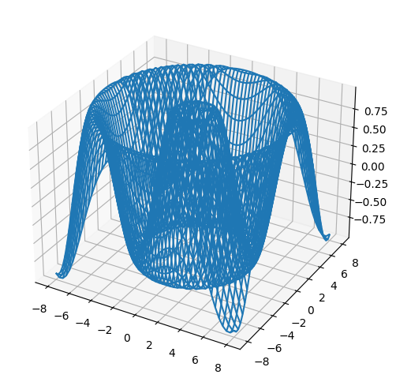
#surface plot example
x = np.linspace(-8, 8, 50)
y = np.linspace(-8, 8, 50)
X, Y = np.meshgrid(x, y)
Z = f(X, Y)
fig = plt.figure(figsize=(8,6))
ax = plt.axes(projection='3d')
ax.plot_surface(X, Y, Z);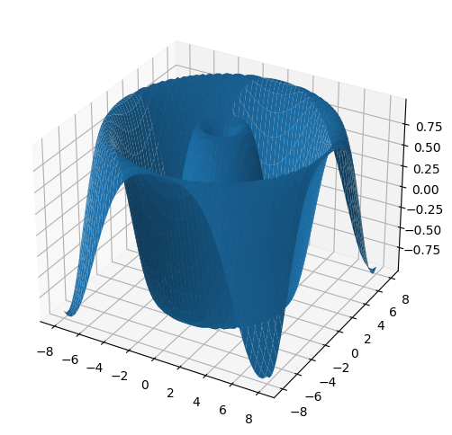